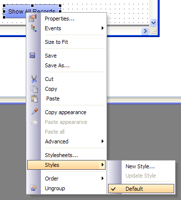
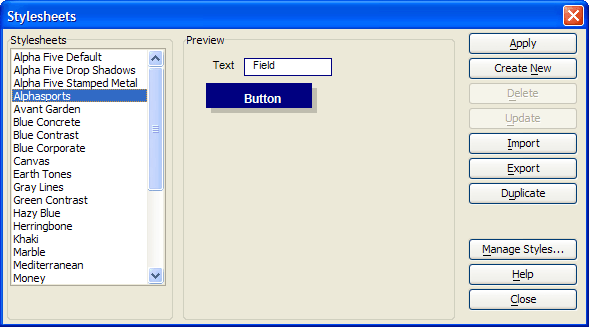
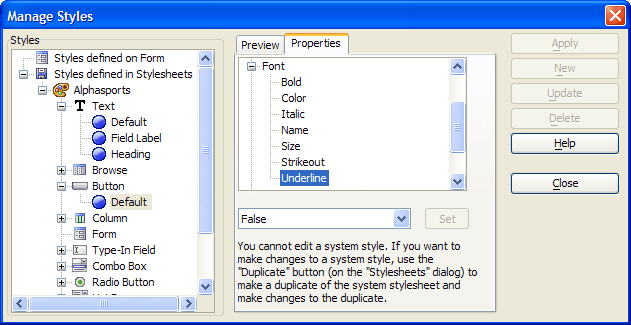

Creating and Using Stylesheets
Perhaps you find it astonishing to see that a new button sketched onto the CustQueryReport form has all the attributes of the other buttons, including the underline property set by the OnFlyover and OnFlyoverLeave events. If you right click on a button and select Styles, the following menu appears.

In this case the button inherits the Default style associated with the CustQueryReport form.
Procedure: Investigating the Alphasports Stylesheet
The following procedure assumes that you have opened the form in the Form Editor.
Right click the form's background and select Stylesheets to display the Stylesheets dialog box.

Click the Manage Styles button.
Expand the Button styles and select "Default".
Click the Properties tab.
Expand "Font" and select "Underline".

The underline attribute is normally turned off (as the "False" value implies). The developer can edit most form and control properties.
See Also